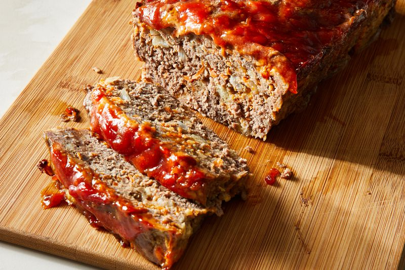

Best Ever Meat Loaf

Description
Prep Time: 20 mins
Cook Time: 1 hr
Total Time: 1 hr 20 mins
Servings: 6
Ingredients
- 2 large eggs
- 2/3 cup milk
- 2 teaspoons salt
- 1/4 teaspoon ground black pepper
- 3 slices bread, crumbled
- 3/2 pounds ground beef
- 1 onion, chopped
- 1 cup shredded Cheddar cheese
- 1/2 cup shredded carrots
- 1/4 cup brown sugar
- 1/4 cup ketchup
- 1 tablespoon prepared yellow mustard
Steps
Step 1
- Preheat the oven to 350 degrees F (175 degrees C)
Step 2
- Whisk eggs, milk, salt, and ground black pepper in a large bowl
- Add crumbled bread and stir until dissolved
- Mix ground beef, onion, Cheddar cheese, and carrot into bread mixture
- Transfer mixture to 9x5-inch loaf pan
- Combine brown sugar, ketchup, and mustard in a small bowl
- Spread over the meat mixture
Step 3
- Bake it in the preheated oven until no longer pink in the center, 60 to 75 minutes
- An instant-read thermometer inserted into the center should read at least 160 degrees F (70 degrees C)
Return to index